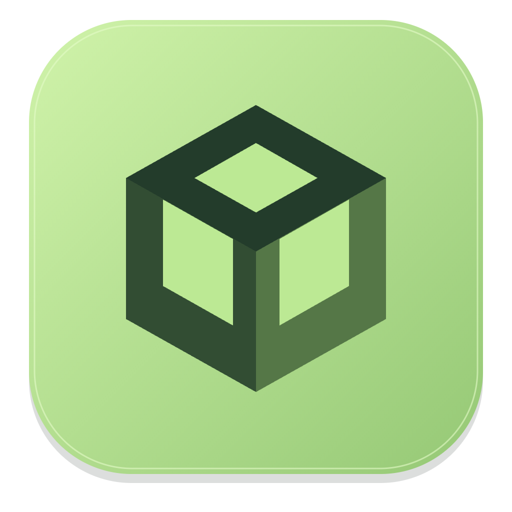
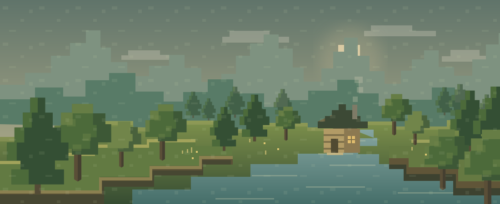
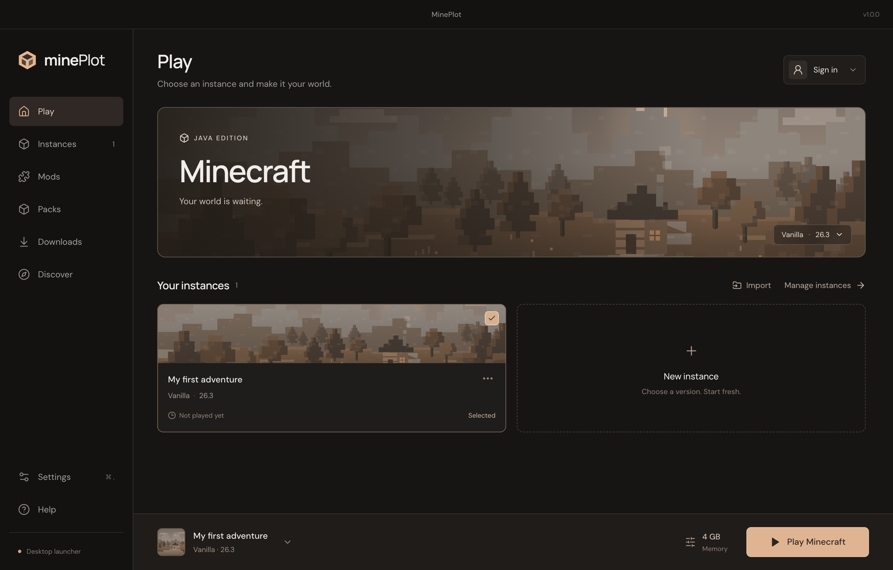

CHOOSE YOUR ERA.
From early alpha to the latest releases and snapshots. Pick an official Java version and make an instance of your own.
A home for every era ↗
minePlotLoad up your favorite version. Stack your mods.
Build something worth getting lost in.

Keep the setup simple, whether you’re coming back to an old favorite or building something completely new.
From early alpha to the latest releases and snapshots. Pick an official Java version and make an instance of your own.
A home for every era ↗Find mods on Modrinth and CurseForge, explore FTB projects, or select compatible mods from ATLauncher and Technic packs.
More ways to play ↗Import game folders and supported modpacks from other launchers. Keep your adventures together in one clean library.
A fresh start, familiar worlds ↗
A calmer kind of launcher.
A clean library, straightforward settings, and your next adventure a click away.
A color for every mood.
Forest, Ocean, Amethyst, or Ember. Your launcher remembers the one you choose.
Get the latest tested preview for Windows, Linux, or macOS. New downloads appear here after a successful build.
For Macs with an M-series chip. Download the ZIP, extract it, and move MinePlot to Applications.
Loading the latest release information…
Release details & SHA-256 ↗Sign in with a Microsoft account that owns Minecraft Java Edition to play the full game. MinePlot is a launcher; it doesn’t include a Minecraft license.
Yes. Import supported folders and ZIPs, including packs from FTB App, FTB Legacy, ATLauncher, and Technic. Some older or custom packs can be imported as files and may need extra setup.
Browse Modrinth directly. CurseForge downloads use your CurseForge API key, and some authors require a website download. ATLauncher and Technic selections come from their packs and must match your instance’s Minecraft version and loader.
Download the macOS Apple silicon build here for Macs with M-series chips. Preview builds may be unsigned; check the release note beside the download button. Windows x64 and Linux x64 downloads are also available here. On Linux, make the AppImage executable before opening it. This Mac download does not support Intel processors.
No. MinePlot is an independent launcher and is not affiliated with Mojang or Microsoft.